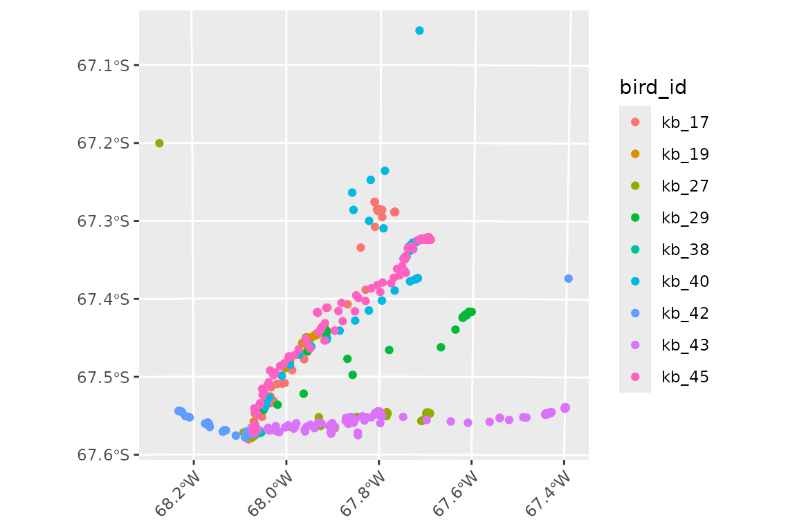
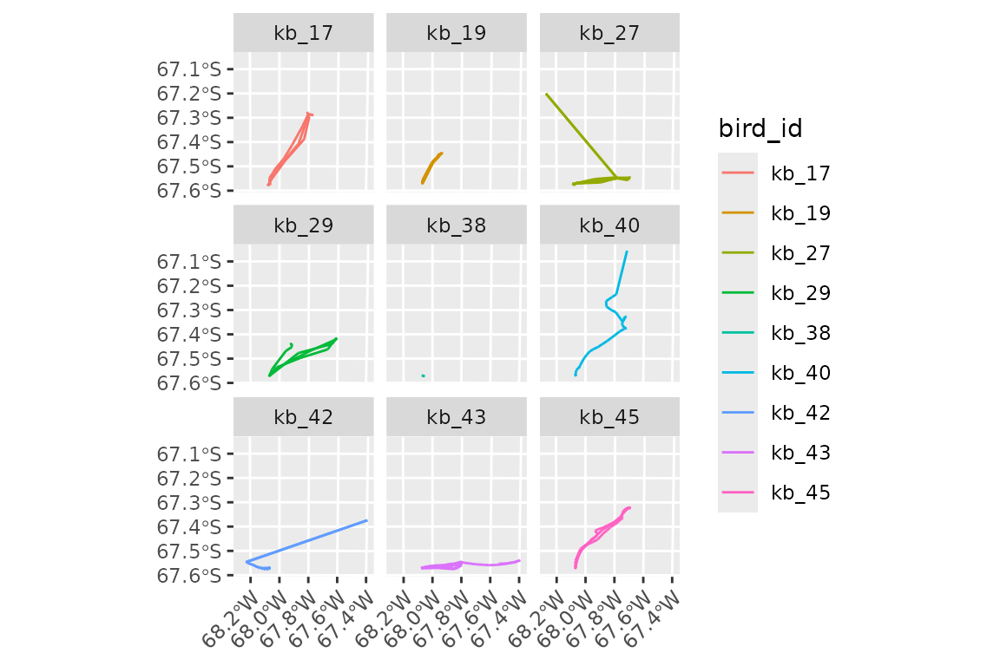
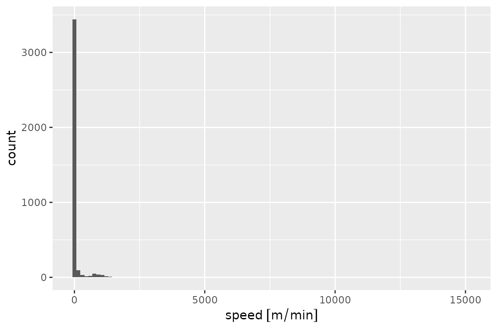
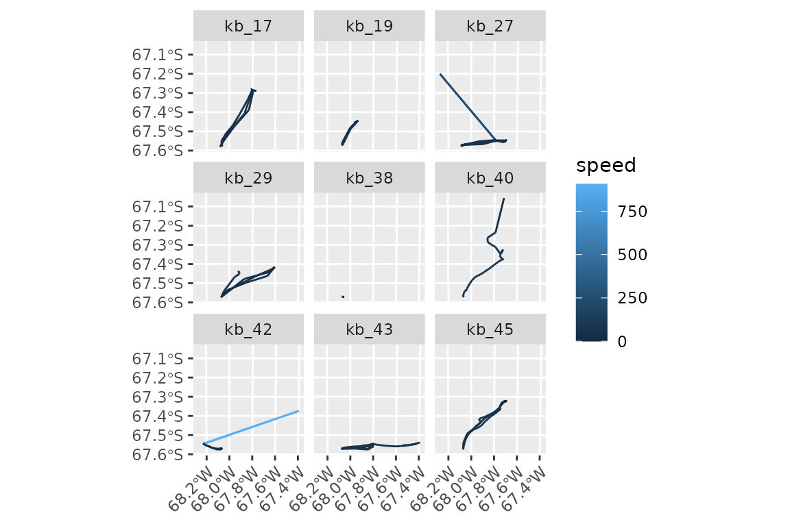
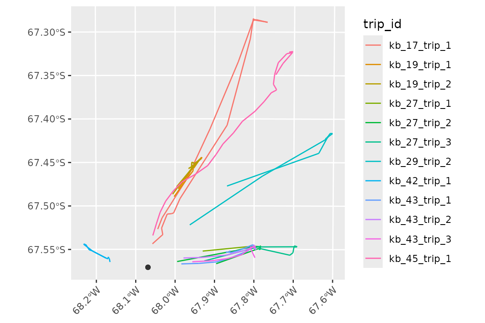
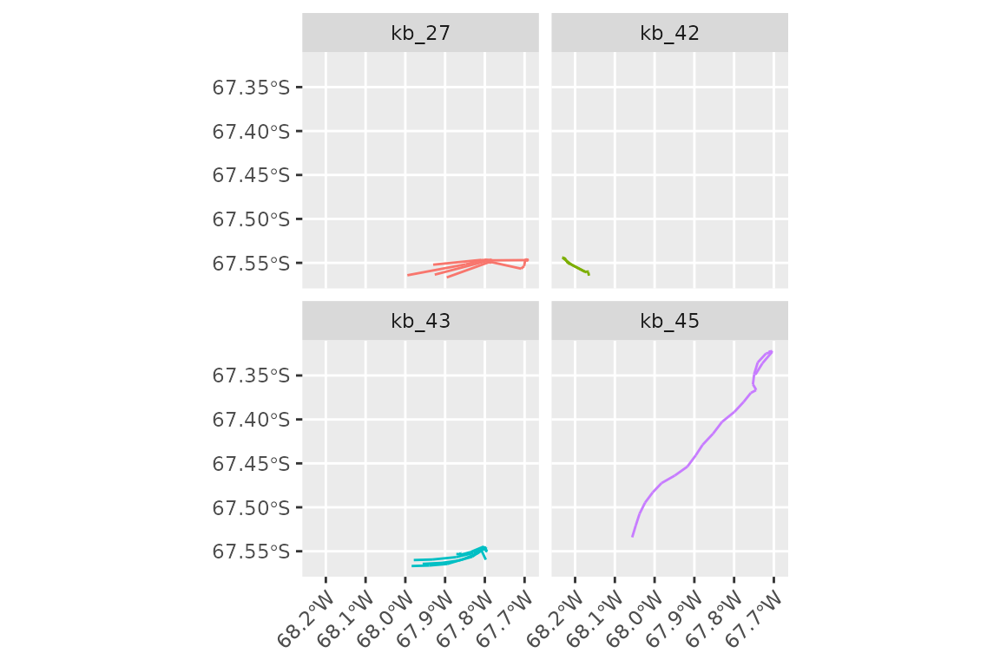
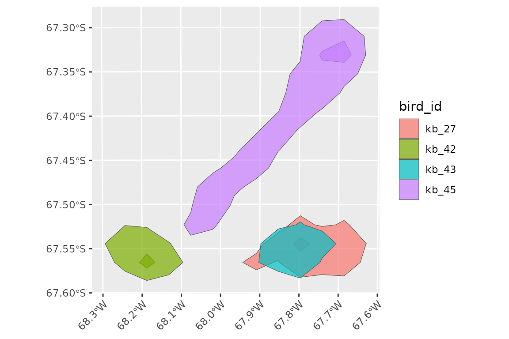
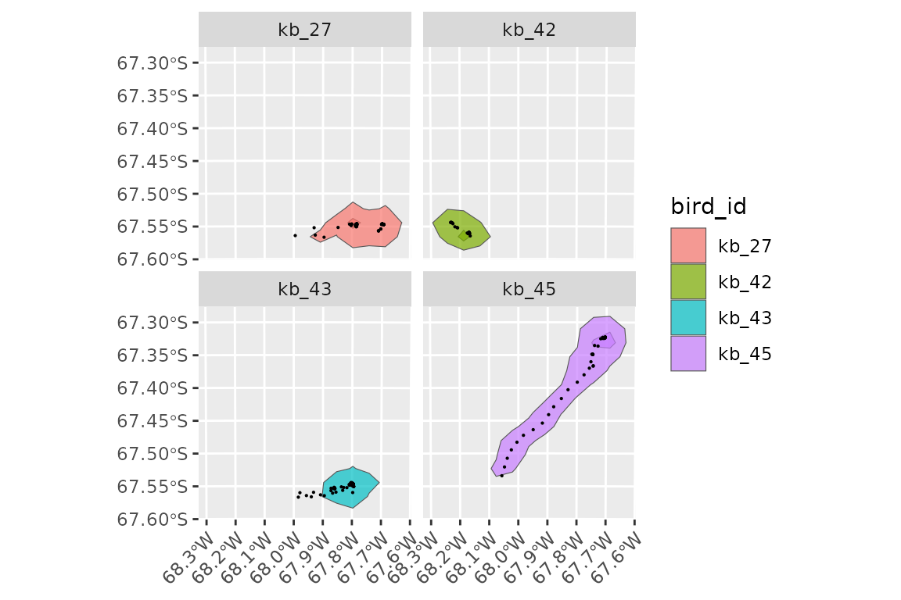
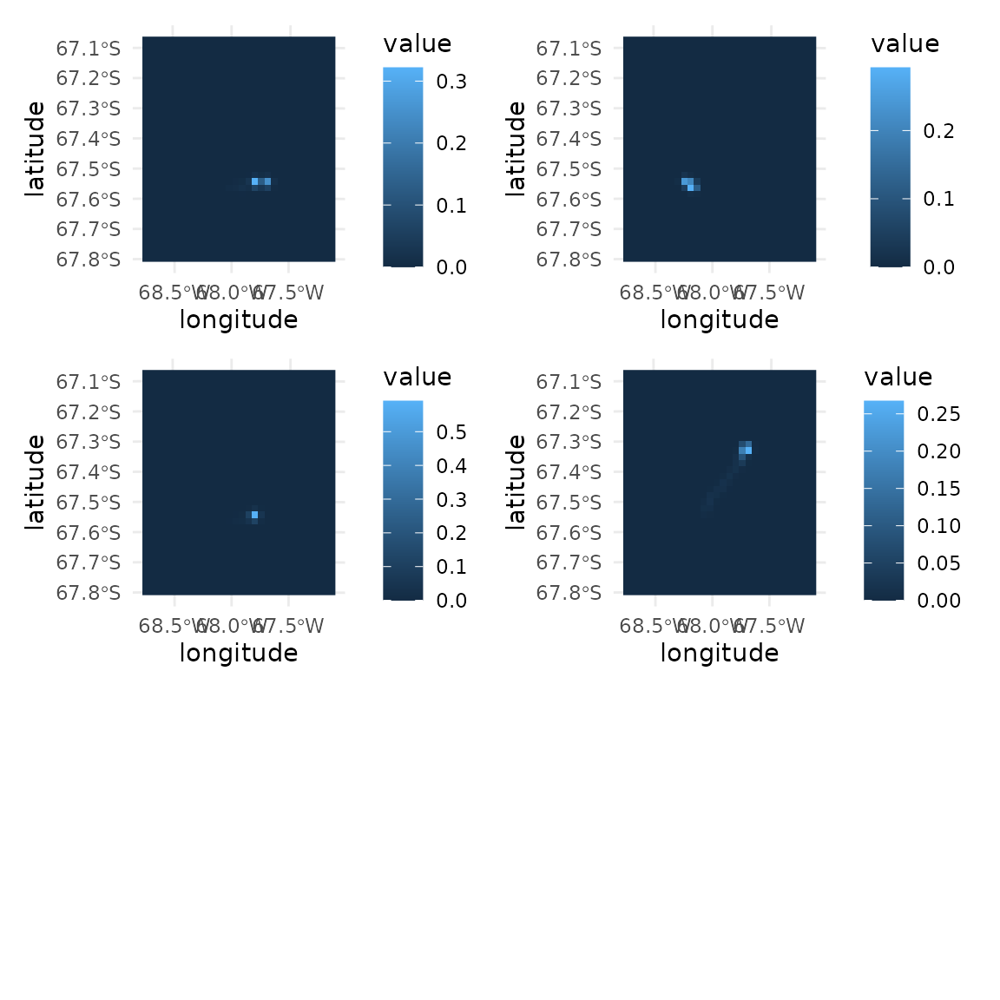
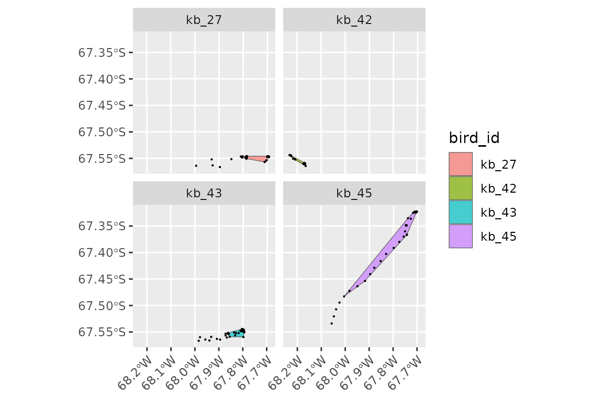

Tracking data representation in tidytracks
tidytracks uses tidy tables to represent movement. We
refer to such a table as a tibble of tracks
(technically, such tables are move2 objects from the move2 package).
In a tibble of tracks, each row represents an event, which is a time-stamped observation, associated with a location (and, optionally, extra data such as activity information).
Events are grouped into tracks. Initially a track might be all the locations from one deployment of a tracking device on an animal. However, for central place foragers, we might want to split this track into separate trips away from the central place. In this case, the unit of tracking (i.e. the new track) will become the trip, rather than the full deployment.
The metadata that describes each of these tracks is
stored in a separate table, which is linked to the event table by a
track_id_column. This means we do not have to repeat
information (such as the ring_number or
sex of the animal, or the tracking deployment
information) for each event. Instead, we store this
track-level information in the metadata of the
track.
Reading data into a tibble of tracks
In tidytracks, we start by reading a table of events
(e.g., GPS locations) from a CSV file or as existing
data.frame in R.
This table should contain at least the following columns: - one
column which is the track_id (i.e. the variable that groups
events into a track, e.g. bird_id, logger_id,
or deployment_id) - two columns representing the
x and y coordinates
(e.g. longitude and latitude) - a
date-time column (or separate date and
time columns)
Additional columns of data will be stored in the events table if they have information that is specific to each event (i.e. the values are not the same within a given track, e.g. the temperature recorded at each location), or they will be moved to the metadata table if they are track specific (e.g. sex of the individual, colony coordinates, breeding status, etc.).
Example data
This vignette will use an example dataset of GPS tracks from the
Antarctic shag Leucocarbo bransfieldensis, a seabird acting as
a central-place forager. This dataset contains 9 tracks with nearly
4,000 locations. Note that these are based on real data, but have been
modified to show the functionality of tidytracks. Please do
not use them for any real analyses of shag movement!
We have a single CSV. Each row includes information about the
locations (in this case lon and lat) and time
(in this case, one date_time column). Locations belonging
to the same bird’s track are identified by the same value in the
bird_id column (in this example, as we only have one track
per bird, the unit of tracking is bird_id).
The CSV also contains other columns of information about the tracks
(sex and colony coordinates split into
colony_lat and colony_lon). These are repeated
for each event, so they will be moved to the metadata table when we
create the tidytracks object.
library(tidytracks)
library(dplyr)
library(ggplot2)
library(sf)
shags_csv <- system.file(
"extdata",
"shags_example.csv",
package = "tidytracks"
)
shags_tt <- tt_read_data(
events = shags_csv,
col_track_id = "bird_id",
col_coords = c("lon", "lat"),
col_date_time = "date_time",
time_zone = "UTC",
crs = 4326
)Inspecting the events table, we have:
shags_tt
#> A <move2> with `track_id_column` "bird_id" and `time_column` "date_time"
#> Containing 9 tracks lasting on average 109052 secs in a
#> Simple feature collection with 3762 features and 3 fields
#> Geometry type: POINT
#> Dimension: XY
#> Bounding box: xmin: -68.26967 ymin: -67.58061 xmax: -67.39642 ymax: -67.0557
#> Geodetic CRS: WGS 84
#> First 10 features:
#> bird_id date_time speed geometry
#> 1 kb_17 2022-01-04 00:09:13 0.06112442 POINT (-68.06908 -67.57072)
#> 2 kb_17 2022-01-04 00:19:07 0.09105526 POINT (-68.06889 -67.57077)
#> 3 kb_17 2022-01-04 00:29:06 0.06175330 POINT (-68.06904 -67.57065)
#> 4 kb_17 2022-01-04 00:39:05 0.04324262 POINT (-68.06894 -67.57073)
#> 5 kb_17 2022-01-04 00:49:04 0.03435565 POINT (-68.06892 -67.57067)
#> 6 kb_17 2022-01-04 00:59:03 0.04847599 POINT (-68.06903 -67.57064)
#> 7 kb_17 2022-01-04 01:09:02 0.04014556 POINT (-68.06888 -67.57059)
#> 8 kb_17 2022-01-04 01:19:01 0.02357237 POINT (-68.06892 -67.57065)
#> 9 kb_17 2022-01-04 01:29:01 0.04011861 POINT (-68.06884 -67.57064)
#> 10 kb_17 2022-01-04 01:39:00 0.02165668 POINT (-68.06892 -67.57069)
#> To see track metadata, use `show_meta()`We can see how each row in the table is an event, in this case a
time-stamped GPS location for a given bird, with the column
date_time providing the time and column
geometry defining the location. bird_id (the
designated track_id_column) is the identifier that groups a
set of events into a single track.
The rest of the information was moved to the meta data table. We can inspect the meta data table as follows:
show_meta(shags_tt)
#> bird_id colony_lon colony_lat sex
#> 1 kb_17 -68.06893 -67.57072 male
#> 2 kb_19 -68.06893 -67.57072 male
#> 3 kb_27 -68.06893 -67.57072 female
#> 4 kb_29 -68.06893 -67.57072 male
#> 5 kb_38 -68.06893 -67.57072 male
#> 6 kb_40 -68.06893 -67.57072 male
#> 7 kb_42 -68.06893 -67.57072 female
#> 8 kb_43 -68.06893 -67.57072 female
#> 9 kb_45 -68.06893 -67.57072 femaleWe have a bird_id column that links back to the events
table, and then information about the sex of each bird, as well as two
columns giving lon and lat coordinates for the colony location.
Note that move2 objects don’t have to be ordered by
time, but for many analyses, this is a requirement. We can order the
data by time (within each track) using the tt_order_time()
function:
shags_tt <- shags_tt %>% tt_order_time()Functions that start with tt_ are specific to tidy
tables of tracks (i.e. move2 objects), and they operate on
the whole object.
Plotting the data
To visualise the data with the ggplot2 package, we can
use the geom_event_point() function to plot the locations
of each event. It is good practice to project data each time we plot it.
geom_event_point() is compatible with
coord_sf() so we can add a projection directly into the
ggplot. All other decorations of ggplot2 can
be used; in this case, we will also adjust the aspect ratio within
theme().
(This projection string is for an Azimuthal Equidistant projection centred on the colony location, which is appropriate for this small area.)
ggplot() +
geom_event_point(data = shags_tt, aes(color = bird_id)) +
coord_sf(crs = paste0(
"+proj=aeqd +lon_0=-68 +lat_0=-67 ",
"+units=m +datum=WGS84 +no_defs"
)) +
theme(
aspect.ratio = 1,
axis.text.x = element_text(angle = 45, hjust = 1)
)
We can explore what each individual is doing by plotting the
locations of each individual separately with facet_wrap. In
this example, instead of plotting locations as points, we will use
geom_event_path() to plot the paths between them:
ggplot() +
geom_event_path(data = shags_tt, aes(color = bird_id)) +
facet_wrap(~bird_id) +
coord_sf(crs = paste0(
"+proj=aeqd +lon_0=-68 +lat_0=-67 ",
"+units=m +datum=WGS84 +no_defs"
)) +
theme(
aspect.ratio = 1,
axis.text.x = element_text(angle = 45, hjust = 1)
)
We can see that bird 'kb_38' moved very little (or not
at all) during the tracked period.
A grammar of movement
As we saw above, tt_* functions are specific to and
operate on the whole table of tracks (aka the move2
object), and return a complete table of tracks. For example, there are
functions to clean the data using a given algorithm (e.g.
tt_clean_mcconnell()), or to split the data into trips for
central place foragers (e.g. tt_split_trips()). We will see
those functions in action in a later section.
event_* functions, on the other hand, operate on events,
and return a vector of the same length as number of rows in the event
table (and thus can be used in mutate() operations). For
example, we can use event_speed() to calculate the speed of
each event. Note that, technically, the speed pertains to the segment
between two events, but for simplicity we will refer to it as the speed
of the event. For each track, event_speed() returns the
speed of each segment, padded with a final NA so that we
have the same number of rows as the original track.
So, we can add speed to our shags_tt object with:
shags_tt <- shags_tt %>%
mutate(speed = event_speed(.))Note the use of the . place-holder in the brackets of
event_speed() to pass the whole move2 object
to the function. This is only possible with a magrittr pipe
(%>%), and not with the base R pipe
(|>).
We can now visualise the distribution of speeds:
shags_tt %>%
ggplot(aes(x = speed)) +
geom_histogram(bins = 100)
#> Warning: Removed 9 rows containing non-finite outside the scale range
#> (`stat_bin()`).
Note the message about 9 rows having been dropped; those are the last
events (for which speed is NA) of each of the 9 tracks.
When appropriate, functions in tidytracks return values
with units, to avoid conversion problems (in this case, meters per
minute). Functions usually have a units parameter that
allows you to change the units that are returned (more details about
working with units below).
The histogram above suggests that there might be outliers or errors in the data, as we seem to have a few events with very high speeds. We will see later how we can clean up the data using McConnell’s algorithm.
Finally, there are track_* functions, which operate on
the whole track, and will return a vector of length equal to the number
of tracks in the object. For example, track_duration()
returns the total duration of each track:
shags_tt %>%
track_duration()
#> Units: [d]
#> kb_17 kb_19 kb_27 kb_29 kb_38 kb_40 kb_42 kb_43
#> 1.5511921 1.5550579 1.5525463 1.9888426 0.8113657 0.2674421 1.3923264 1.6727894
#> kb_45
#> 0.5680324If we wanted the same estimates in hours rather than days, we would simply say:
shags_tt %>%
track_duration(units = "hours")
#> Units: [h]
#> kb_17 kb_19 kb_27 kb_29 kb_38 kb_40 kb_42 kb_43
#> 37.228611 37.321389 37.261111 47.732222 19.472778 6.418611 33.415833 40.146944
#> kb_45
#> 13.632778This naming convention helps clarifying the scope of a given function, avoiding ambiguities.
For example, event_flag_mcconnell() will return a
logical vector indicating whether events are valid or whether they
should be filtered out using McConnell’s algorithm, whilst
tt_clean_mcconnell() will return a tibble of tracks with
the invalid events removed.
Similarly, event_distance() will return a vector of
distances between events (a vector of the same length as the rows of the
event column), while track_distance() will return the total
(cumulative) distance for each track (and thus a shorter vector of
length equal to the number of tracks in the object).
Cleaning the data
We can get an overview of the speeds of each step with:
shags_tt %>%
summary()
#> bird_id date_time speed
#> kb_43 :1195 Min. :2022-01-04 00:07:13 Min. : 0.000
#> kb_42 : 991 1st Qu.:2022-12-30 17:43:43 1st Qu.: 1.930
#> kb_45 : 404 Median :2022-12-31 03:20:54 Median : 4.596
#> kb_19 : 225 Mean :2022-10-07 17:21:40 Mean : 64.689
#> kb_17 : 223 3rd Qu.:2022-12-31 16:53:21 3rd Qu.: 12.422
#> kb_27 : 223 Max. :2023-01-04 22:18:26 Max. :15126.727
#> (Other): 501 NAs :9
#> geometry
#> POINT :3762
#> epsg:4326 : 0
#> +proj=long...: 0
#>
#>
#>
#> Some of those speeds (>15000 m/minute) seem a bit high. We can check the units (to make sure we have them right):
units(shags_tt$speed)
#> $numerator
#> [1] "m"
#>
#> $denominator
#> [1] "min"
#>
#> attr(,"class")
#> [1] "symbolic_units"Let’s recalculate them in units that might be more familiar to us.
shags_tt <- shags_tt %>%
mutate(speed = set_units(speed, "km/h"))
shags_tt %>%
summary()
#> bird_id date_time speed
#> kb_43 :1195 Min. :2022-01-04 00:07:13 Min. : 0.0000
#> kb_42 : 991 1st Qu.:2022-12-30 17:43:43 1st Qu.: 0.1158
#> kb_45 : 404 Median :2022-12-31 03:20:54 Median : 0.2758
#> kb_19 : 225 Mean :2022-10-07 17:21:40 Mean : 3.8813
#> kb_17 : 223 3rd Qu.:2022-12-31 16:53:21 3rd Qu.: 0.7453
#> kb_27 : 223 Max. :2023-01-04 22:18:26 Max. :907.6036
#> (Other): 501 NAs :9
#> geometry
#> POINT :3762
#> epsg:4326 : 0
#> +proj=long...: 0
#>
#>
#>
#> Hmm, 904 km/h is much faster than typical flight speed for a shag (European shags usually fly at speeds around 50–65 km/h; see e.g. Wanless et al. 1997).
Let’s plot the speed of each event:
ggplot() +
geom_event_path(
data = shags_tt,
aes(color = speed)
) +
facet_wrap(~bird_id) +
coord_sf(crs = paste0(
"+proj=aeqd +lon_0=-68 +lat_0=-67 ",
"+units=m +datum=WGS84 +no_defs"
)) +
theme(
aspect.ratio = 1,
axis.text.x = element_text(angle = 45, hjust = 1)
)
It looks like there are a few GPS location errors here, resulting in unrealistic speeds (we can easily see the very fast outlier is at the end of a track).
We can remove locations characterised by unlikely speeds using the
McConnell’s algorithm (the same used by
trip::speedfilter()). Max speed can be set to an
appropriate number for the species we are working with. Shags have been
observed flying at 58km/h (Yukihisa et al. 2016) so we will set the
maximum to 60. Note that we can give the max_speed in any
units we want, and they will be automatically converted to the units in
the object.
n_before <- nrow(shags_tt)
shags_tt <- shags_tt %>%
tt_clean_mcconnell(max_speed = as_units(60, "km/h"))
n_after <- nrow(shags_tt)
n_before - n_after
#> [1] 25Note that tt_clean_mcconnell() is “destructive” and will
remove the points flagged by the algorithm. There is also a function
event_flag_mcconnell() which flags points without removing
them; see its help page for more details on how to use it.
Here we see that 25 points have been removed. Let us now recompute the speeds after running the filter (again, in km/h):
shags_tt <- shags_tt %>%
mutate(speed = event_speed(., units = as_units("km/h")))
summary(shags_tt$speed)
#> Min. 1st Qu. Median Mean 3rd Qu. Max. NAs
#> 0.0000 0.1151 0.2724 2.8374 0.7225 76.5228 9Note again the use of ‘.’ to pass the tibble to
event_speed().
We can see that we have removed some locations with unrealistic speeds. Note that the McConnell algorithm does not simply remove steps above the threshold speed, but uses the root mean square speed for previous/next and 2nd previous to next point, thus allowing for individual steps that might have a speed just above the threshold if the subsequent point is not too far away.
Note: because of this, sometimes if there are two consecutive points with unrealistically high speeds, the algorithm may miss one, this can be remedied by recalculating speeds and then running the filter again.
Splitting trips
Shags are central place foragers, and so we now want to split each
bird’s track into foraging trips away from and back to the colony. For
this we need to define the colony location, and a buffer around it.
tt_split_trips() takes one nest location per track as a
point column in the metadata
In tidytracks, all locations should be stored as
sfc_POINT geometries with a defined coordinate reference
system (CRS). Whilst this is done automatically for location events,
location information in the metadata needs to be converted after reading
the file:
show_meta(shags_tt) <- show_meta(shags_tt) %>%
mutate(colony_coord = sf_point_col(colony_lon, colony_lat, crs = 4326))Note that we use sf_point_col() to create a column. Do
not replace the metadata with a full sf tibble, as that
creates problems with certain functions.
When defining the outbound and inbound buffers for trip splitting, it is important to consider the resolution and accuracy of your locations, and the likely movements of your birds.
shags_tt_split <- shags_tt %>%
tt_split_trips(
centre_col = "colony_coord",
buffer_outbound = as_units(3, "km"),
buffer_inbound = as_units(3, "km"),
complete = TRUE
)If we now inspect the object, we can see that there is a new column,
trip_id, which is also used as the new
track_id_column in the move2 object:
shags_tt_split
#> A <move2> with `track_id_column` "trip_id" and `time_column` "date_time"
#> Containing 12 tracks lasting on average 15410 secs in a
#> Simple feature collection with 565 features and 4 fields
#> Geometry type: POINT
#> Dimension: XY
#> Bounding box: xmin: -68.23206 ymin: -67.56682 xmax: -67.60288 ymax: -67.28459
#> Geodetic CRS: WGS 84
#> First 10 features:
#> bird_id date_time speed geometry
#> 1 kb_17 2022-01-04 10:26:41 8.9664714 [km/h] POINT (-68.05746 -67.54373)
#> 2 kb_17 2022-01-04 10:36:39 0.7707836 [km/h] POINT (-68.03354 -67.53401)
#> 3 kb_17 2022-01-04 10:46:33 5.1435552 [km/h] POINT (-68.03125 -67.53328)
#> 4 kb_17 2022-01-04 10:56:41 11.5193175 [km/h] POINT (-68.03423 -67.52557)
#> 5 kb_17 2022-01-04 11:06:32 2.8492170 [km/h] POINT (-68.02001 -67.50951)
#> 6 kb_17 2022-01-04 11:16:27 1.3453614 [km/h] POINT (-68.00905 -67.50906)
#> 7 kb_17 2022-01-04 11:27:31 11.7768735 [km/h] POINT (-68.00369 -67.5082)
#> 8 kb_17 2022-01-04 11:37:30 64.8821529 [km/h] POINT (-67.98762 -67.49174)
#> 9 kb_17 2022-01-04 11:47:24 68.3477219 [km/h] POINT (-67.86887 -67.40727)
#> 10 kb_17 2022-01-04 11:57:23 15.6500440 [km/h] POINT (-67.81108 -67.30776)
#> trip_id
#> 1 kb_17_trip_1
#> 2 kb_17_trip_1
#> 3 kb_17_trip_1
#> 4 kb_17_trip_1
#> 5 kb_17_trip_1
#> 6 kb_17_trip_1
#> 7 kb_17_trip_1
#> 8 kb_17_trip_1
#> 9 kb_17_trip_1
#> 10 kb_17_trip_1
#> To see track metadata, use `show_meta()`
unique(shags_tt_split$trip_id)
#> [1] "kb_17_trip_1" "kb_19_trip_1" "kb_19_trip_2" "kb_27_trip_1" "kb_27_trip_2"
#> [6] "kb_27_trip_3" "kb_29_trip_2" "kb_42_trip_1" "kb_43_trip_1" "kb_43_trip_2"
#> [11] "kb_43_trip_3" "kb_45_trip_1"Let’s look at the metadata:
str(show_meta(shags_tt_split))
#> 'data.frame': 12 obs. of 7 variables:
#> $ bird_id : Factor w/ 9 levels "kb_17","kb_19",..: 1 2 2 3 3 3 4 7 8 8 ...
#> $ colony_lon : num -68.1 -68.1 -68.1 -68.1 -68.1 ...
#> $ colony_lat : num -67.6 -67.6 -67.6 -67.6 -67.6 ...
#> $ sex : chr "male" "male" "male" "female" ...
#> $ colony_coord:sfc_POINT of length 12; first list element: 'XY' num -68.1 -67.6
#> $ trip_id : chr "kb_17_trip_1" "kb_19_trip_1" "kb_19_trip_2" "kb_27_trip_1" ...
#> $ trip_type : chr "complete" "complete" "complete" "complete" ...We can see that all the birds except for 'kb_38' and
'kb_40' made between 1 and 3 central place foraging trips.
'kb_38' didn’t move and was therefore filtered out.
'kb_40' migrated away from the colony and did not return so
was also removed.
How the trip splitting works:
The buffer_outbound and buffer_inbound
arguments in tt_split_trips() define zones around the
central place (colony) that an animal must cross to be considered as
starting or ending a trip. The complete = TRUE argument
ensures that only trips which both leave and return to the colony (i.e.,
complete round trips) are retained. As a result, any tracks that do not
leave the buffer zone, or trips that are not complete, are removed from
the dataset.
ggplot() +
geom_event_path(data = shags_tt_split, aes(color = trip_id)) +
geom_sf(data = show_meta(shags_tt_split)$colony_coord, color = "grey20") +
coord_sf(crs = paste0(
"+proj=aeqd +lon_0=-68 +lat_0=-67 ",
"+units=m +datum=WGS84 +no_defs"
)) +
theme(
aspect.ratio = 1,
axis.text.x = element_text(angle = 45, hjust = 1)
)
Summarising tracks
We can get summary statistics for each of our tracks using
track_summary_stats().
Because some of these stats involve distances from the centre, we can
either specify centre_col as a sf metadata
column in the same was as for tt_split_trips() above, or
leave it as NULL to use the first point of each track as
the centre.
shags_tt_split %>%
track_summary_stats(centre_col = "colony_coord")
#> # A tibble: 12 × 10
#> trip_id tot_duration tot_distance max_latitude min_latitude max_longitude
#> <chr> [d] [m] <dbl> <dbl> <dbl>
#> 1 kb_17_trip… 0.277 64154. -67.3 -67.5 -67.8
#> 2 kb_19_trip… 0.280 13062. -67.4 -67.5 -67.9
#> 3 kb_19_trip… 0.280 14646. -67.4 -67.5 -67.9
#> 4 kb_27_trip… 0.170 7075. -67.5 -67.6 -67.8
#> 5 kb_27_trip… 0.121 15544. -67.5 -67.6 -67.8
#> 6 kb_27_trip… 0.273 16880. -67.5 -67.6 -67.7
#> 7 kb_29_trip… 0.278 36207. -67.4 -67.5 -67.6
#> 8 kb_42_trip… 0.0323 7633. -67.5 -67.6 -68.2
#> 9 kb_43_trip… 0.165 13981. -67.5 -67.6 -67.8
#> 10 kb_43_trip… 0.0869 10385. -67.5 -67.6 -67.8
#> 11 kb_43_trip… 0.0743 10789. -67.5 -67.6 -67.8
#> 12 kb_45_trip… 0.104 34343. -67.3 -67.5 -67.7
#> # ℹ 4 more variables: min_longitude <dbl>, max_dist_centre [m],
#> # lat_at_max_dist_centre <dbl>, lon_at_max_dist_centre <dbl>Note that track_summary_stats() will return a tibble
with one row per track, rather than the vector with one element per
track that is produced by track_duration() above.
Note that these distance calculations are being done on unprojected
data in Euclidean distance. Reprojection within the ggplot
map only applies within the map itself and doesn’t change the
tidytracks object.
Filter trips
We will now filter the data set to leave only the females, so that we
can then perform some analysis. This information is the metadata table,
so we will use filter_by_meta() to filter the dataset:
shags_females <- shags_tt_split %>%
filter_by_meta(sex == "female")
show_meta(shags_females)
#> bird_id colony_lon colony_lat sex colony_coord trip_id
#> 1 kb_27 -68.06893 -67.57072 female POINT (-68.06893 -67.57072) kb_27_trip_1
#> 2 kb_27 -68.06893 -67.57072 female POINT (-68.06893 -67.57072) kb_27_trip_2
#> 3 kb_27 -68.06893 -67.57072 female POINT (-68.06893 -67.57072) kb_27_trip_3
#> 4 kb_42 -68.06893 -67.57072 female POINT (-68.06893 -67.57072) kb_42_trip_1
#> 5 kb_43 -68.06893 -67.57072 female POINT (-68.06893 -67.57072) kb_43_trip_1
#> 6 kb_43 -68.06893 -67.57072 female POINT (-68.06893 -67.57072) kb_43_trip_2
#> 7 kb_43 -68.06893 -67.57072 female POINT (-68.06893 -67.57072) kb_43_trip_3
#> 8 kb_45 -68.06893 -67.57072 female POINT (-68.06893 -67.57072) kb_45_trip_1
#> trip_type
#> 1 complete
#> 2 complete
#> 3 complete
#> 4 complete
#> 5 complete
#> 6 complete
#> 7 complete
#> 8 completeWe can now plot the trips:
ggplot() +
geom_event_path(
data = shags_females,
aes(color = bird_id) # can't use trip_id here because not trip splitted data
) +
facet_wrap(~bird_id) +
theme(
aspect.ratio = 1,
axis.text.x = element_text(angle = 45, hjust = 1),
legend.position = "none"
)
If we wanted, we could also add the track summary statistics into the metadata, and use this information to filter the data set, for example to only trips that were longer than a certain duration or distance threshold.
show_meta(shags_tt_split) <- show_meta(shags_tt_split) %>%
left_join(track_summary_stats(shags_tt_split, centre_col = "colony_coord"),
by = "trip_id"
)
show_meta(shags_tt_split)
#> bird_id colony_lon colony_lat sex colony_coord
#> 1 kb_17 -68.06893 -67.57072 male POINT (-68.06893 -67.57072)
#> 2 kb_19 -68.06893 -67.57072 male POINT (-68.06893 -67.57072)
#> 3 kb_19 -68.06893 -67.57072 male POINT (-68.06893 -67.57072)
#> 4 kb_27 -68.06893 -67.57072 female POINT (-68.06893 -67.57072)
#> 5 kb_27 -68.06893 -67.57072 female POINT (-68.06893 -67.57072)
#> 6 kb_27 -68.06893 -67.57072 female POINT (-68.06893 -67.57072)
#> 7 kb_29 -68.06893 -67.57072 male POINT (-68.06893 -67.57072)
#> 8 kb_42 -68.06893 -67.57072 female POINT (-68.06893 -67.57072)
#> 9 kb_43 -68.06893 -67.57072 female POINT (-68.06893 -67.57072)
#> 10 kb_43 -68.06893 -67.57072 female POINT (-68.06893 -67.57072)
#> 11 kb_43 -68.06893 -67.57072 female POINT (-68.06893 -67.57072)
#> 12 kb_45 -68.06893 -67.57072 female POINT (-68.06893 -67.57072)
#> trip_id trip_type tot_duration tot_distance max_latitude
#> 1 kb_17_trip_1 complete 0.27710648 [d] 64153.775 [m] -67.28459
#> 2 kb_19_trip_1 complete 0.27953704 [d] 13062.336 [m] -67.44403
#> 3 kb_19_trip_2 complete 0.27980324 [d] 14646.337 [m] -67.44572
#> 4 kb_27_trip_1 complete 0.17011574 [d] 7075.436 [m] -67.54630
#> 5 kb_27_trip_2 complete 0.12056713 [d] 15544.376 [m] -67.54576
#> 6 kb_27_trip_3 complete 0.27295139 [d] 16880.422 [m] -67.54584
#> 7 kb_29_trip_2 complete 0.27776620 [d] 36207.127 [m] -67.41631
#> 8 kb_42_trip_1 complete 0.03231481 [d] 7633.125 [m] -67.54379
#> 9 kb_43_trip_1 complete 0.16469907 [d] 13981.456 [m] -67.54466
#> 10 kb_43_trip_2 complete 0.08687500 [d] 10385.042 [m] -67.54457
#> 11 kb_43_trip_3 complete 0.07430556 [d] 10788.633 [m] -67.54638
#> 12 kb_45_trip_1 complete 0.10421296 [d] 34343.099 [m] -67.32233
#> min_latitude max_longitude min_longitude max_dist_centre
#> 1 -67.54373 -67.76814 -68.05746 33889.752 [m]
#> 2 -67.48943 -67.93273 -68.00242 15227.878 [m]
#> 3 -67.48667 -67.93512 -68.00620 15019.282 [m]
#> 4 -67.55208 -67.78400 -67.93001 12379.712 [m]
#> 5 -67.56658 -67.78343 -67.99485 12432.770 [m]
#> 6 -67.56340 -67.69097 -67.92603 16259.348 [m]
#> 7 -67.52197 -67.60288 -67.96283 26222.073 [m]
#> 8 -67.56457 -68.16519 -68.23206 7535.107 [m]
#> 9 -67.56682 -67.79789 -67.98416 11817.800 [m]
#> 10 -67.56003 -67.79424 -67.97876 11879.825 [m]
#> 11 -67.56438 -67.79609 -67.95639 11880.917 [m]
#> 12 -67.53412 -67.70416 -68.05644 31698.399 [m]
#> lat_at_max_dist_centre lon_at_max_dist_centre
#> 1 -67.28865 -67.76814
#> 2 -67.44403 -67.93295
#> 3 -67.44572 -67.93512
#> 4 -67.54697 -67.78400
#> 5 -67.54576 -67.78343
#> 6 -67.54697 -67.69097
#> 7 -67.41649 -67.60288
#> 8 -67.54399 -68.23206
#> 9 -67.54644 -67.79789
#> 10 -67.55022 -67.79424
#> 11 -67.54642 -67.79637
#> 12 -67.32233 -67.70420We may wish to move metadata to the events table (using
as_event_column()) or vice versa (using
as_meta_column()).
For example, to count the number of points available for males and females, we can move the sex information into the event table, and count how many events we have for males and females:
Home Range estimates
For this analysis, we will use the shags_females data set we just
created. To estimate home ranges, we need to project the data to an
equal area projection. We can use the sf::st_transform()
function to do this:
shags_females_proj <- shags_females %>%
st_transform(crs = paste0(
"+proj=aeqd +lon_0=-68 +lat_0=-67 ",
"+units=m +datum=WGS84 +no_defs"
))Kernel UDs
We can now estimate the home range using Kernel Density
Estimation (KDE). The default smoothing parameter (h)
in the hr_kde() function is set to
'h_ref_mean'. The bandwidth for the kernel density
estimation can be either a number, or 'h_ref_indiv' for
using the reference bandwidth for each individual, or
'h_ref_mean' for using the mean bandwidth for all
individuals (the default).
Note the levels parameter: if NULL, a
tibble with the full utilisation distribution (UD) for each track is
returned. Alternatively you can specify a vector of levels between 0 and
1 to return a tibble with the isopleths for each track. In this case, we
will use 0.5 and 0.95 as the levels (the core and general use
areas).
By default, the UD will be calculated at the current unit of
tracking, as given by the track_id_column in the
move2 object. In this case, that is trip_id,
as we can see when we print the object:
A <move2> with `track_id_column` "trip_id" and `time_column` "date_time"To override this behaviour, use dplyr::group_by() to
group by a different variable. Here, we want to estimate the home range
for each bird (rather than each central-place foraging trip), so we will
group by bird_id:
If you get a warning here, it may be because one of the datasets is small, and so the 0.50 isopleth could not be computed. This is because the KDE is based on a grid, and if there are too few points, the grid will not be able to capture the distribution of the points.
shags_females_kde is an sf object, with
estimates of the area (in the units of the projection, in this case m^2)
and a geometry column:
class(shags_females_kde)
#> [1] "sf" "tbl_df" "tbl" "data.frame"
shags_females_kde
#> Simple feature collection with 7 features and 10 fields
#> Geometry type: MULTIPOLYGON
#> Dimension: XY
#> Bounding box: xmin: -12532.04 ymin: -65387.44 xmax: 15833.51 ymax: -32453.28
#> Projected CRS: PROJCRS["unknown",
#> BASEGEOGCRS["unknown",
#> DATUM["World Geodetic System 1984",
#> ELLIPSOID["WGS 84",6378137,298.257223563,
#> LENGTHUNIT["metre",1]],
#> ID["EPSG",6326]],
#> PRIMEM["Greenwich",0,
#> ANGLEUNIT["degree",0.0174532925199433],
#> ID["EPSG",8901]]],
#> CONVERSION["unknown",
#> METHOD["Azimuthal Equidistant",
#> ID["EPSG",1125]],
#> PARAMETER["Latitude of natural origin",-67,
#> ANGLEUNIT["degree",0.0174532925199433],
#> ID["EPSG",8801]],
#> PARAMETER["Longitude of natural origin",-68,
#> ANGLEUNIT["degree",0.0174532925199433],
#> ID["EPSG",8802]],
#> PARAMETER["False easting",0,
#> LENGTHUNIT["metre",1],
#> ID["EPSG",8806]],
#> PARAMETER["False northing",0,
#> LENGTHUNIT["metre",1],
#> ID["EPSG",8807]]],
#> CS[Cartesian,2],
#> AXIS["(E)",east,
#> ORDER[1],
#> LENGTHUNIT["metre",1,
#> ID["EPSG",9001]]],
#> AXIS["(N)",north,
#> ORDER[2],
#> LENGTHUNIT["metre",1,
#> ID["EPSG",9001]]]]
#> # A tibble: 7 × 11
#> bird_id method h xmin ymin xmax ymax res level area
#> <chr> <chr> <dbl> <dbl> <dbl> <dbl> <dbl> <dbl> <dbl> [m^2]
#> 1 kb_27 kde 1117. -32968. -90453. 38378. -7215. 2378. 0.5 1575861.
#> 2 kb_27 kde 1117. -32968. -90453. 38378. -7215. 2378. 0.95 63707449.
#> 3 kb_42 kde 1117. -32968. -90453. 38378. -7215. 2378. 0.5 1523079.
#> 4 kb_42 kde 1117. -32968. -90453. 38378. -7215. 2378. 0.95 37970734.
#> 5 kb_43 kde 1117. -32968. -90453. 38378. -7215. 2378. 0.95 37543242.
#> 6 kb_45 kde 1117. -32968. -90453. 38378. -7215. 2378. 0.5 5799420.
#> 7 kb_45 kde 1117. -32968. -90453. 38378. -7215. 2378. 0.95 135138832.
#> # ℹ 1 more variable: geometry <MULTIPOLYGON [m]>Note that because we used a custom projection, the
Projected CRS section of the output is very long. We can
ignore this, and focus on the tibble printed below it.
We could easily change the units of the area with
set_units():
shags_females_kde %>%
mutate(area = set_units(area, "km^2")) %>%
select(bird_id, level, area)
#> Simple feature collection with 7 features and 3 fields
#> Geometry type: MULTIPOLYGON
#> Dimension: XY
#> Bounding box: xmin: -12532.04 ymin: -65387.44 xmax: 15833.51 ymax: -32453.28
#> Projected CRS: PROJCRS["unknown",
#> BASEGEOGCRS["unknown",
#> DATUM["World Geodetic System 1984",
#> ELLIPSOID["WGS 84",6378137,298.257223563,
#> LENGTHUNIT["metre",1]],
#> ID["EPSG",6326]],
#> PRIMEM["Greenwich",0,
#> ANGLEUNIT["degree",0.0174532925199433],
#> ID["EPSG",8901]]],
#> CONVERSION["unknown",
#> METHOD["Azimuthal Equidistant",
#> ID["EPSG",1125]],
#> PARAMETER["Latitude of natural origin",-67,
#> ANGLEUNIT["degree",0.0174532925199433],
#> ID["EPSG",8801]],
#> PARAMETER["Longitude of natural origin",-68,
#> ANGLEUNIT["degree",0.0174532925199433],
#> ID["EPSG",8802]],
#> PARAMETER["False easting",0,
#> LENGTHUNIT["metre",1],
#> ID["EPSG",8806]],
#> PARAMETER["False northing",0,
#> LENGTHUNIT["metre",1],
#> ID["EPSG",8807]]],
#> CS[Cartesian,2],
#> AXIS["(E)",east,
#> ORDER[1],
#> LENGTHUNIT["metre",1,
#> ID["EPSG",9001]]],
#> AXIS["(N)",north,
#> ORDER[2],
#> LENGTHUNIT["metre",1,
#> ID["EPSG",9001]]]]
#> # A tibble: 7 × 4
#> bird_id level area geometry
#> <chr> <dbl> [km^2] <MULTIPOLYGON [m]>
#> 1 kb_27 0.5 1.58 (((8650.566 -61680.33, 7899.318 -60725.04, 8650.566 -599…
#> 2 kb_27 0.95 63.7 (((3894.128 -64041.44, 2406.969 -63103.26, 3894.128 -619…
#> 3 kb_42 0.5 1.52 (((-7996.968 -63824.54, -8800.773 -63103.26, -7996.968 -…
#> 4 kb_42 0.95 38.0 (((-10375.19 -64211.16, -11503.66 -63103.26, -12532.04 -…
#> 5 kb_43 0.95 37.5 (((6272.347 -64237.05, 4150.268 -63103.26, 4375.144 -607…
#> 6 kb_45 0.5 5.80 (((11028.78 -37579.89, 10762.96 -36942.85, 11028.78 -364…
#> 7 kb_45 0.95 135. (((-3240.529 -59680.11, -3980.504 -58346.82, -3240.529 -…We can plot the home ranges:
ggplot(shags_females_kde) +
geom_sf(aes(fill = bird_id), alpha = 0.7) +
theme(
aspect.ratio = 1,
axis.text.x = element_text(angle = 45, hjust = 1)
)
We can add actual events with:
ggplot() +
geom_sf(
data = shags_females_kde,
aes(fill = bird_id), alpha = 0.7
) +
geom_event_point(
data = shags_females_proj,
size = 0.1
) +
facet_wrap(~bird_id) +
theme(
aspect.ratio = 1,
axis.text.x = element_text(angle = 45, hjust = 1)
)
To retain the full utilisation distributions instead, omit
levels:
shags_females_ud <- shags_females_proj %>%
group_by(bird_id) %>%
hr_kde()
shags_females_ud
#> # A tibble: 4 × 9
#> bird_id method h xmin ymin xmax ymax res ud
#> <chr> <chr> <dbl> <dbl> <dbl> <dbl> <dbl> <dbl> <named list>
#> 1 kb_27 kde 1117. -32968. -90453. 38378. -7215. 2378. <SpatRstr[,30,1]>
#> 2 kb_42 kde 1117. -32968. -90453. 38378. -7215. 2378. <SpatRstr[,30,1]>
#> 3 kb_43 kde 1117. -32968. -90453. 38378. -7215. 2378. <SpatRstr[,30,1]>
#> 4 kb_45 kde 1117. -32968. -90453. 38378. -7215. 2378. <SpatRstr[,30,1]>We can visualise the UD with a simple autoplot:
autoplot(shags_females_ud)
Note that the UD tibble contains live SpatRaster
objects. These can not be saved directly, so we need to use
hr_ud_saveRDS() rather than saveRDS() to save
it. hr_ud_saveRDS() wraps the rasters before writing the
RDS file (see the help page for the wrap() function in
terra for details):
ud_file <- file.path(tempdir(), "shags_females_ud.rds")
hr_ud_saveRDS(shags_females_ud, ud_file)When the object is loaded again, its ud column is
wrapped (we can see that it says <PckSpR>, indicating
that it is a list of Packed Rasters (i.e. wrapped).
shags_females_ud <- readRDS(ud_file)
shags_females_ud
#> # A tibble: 4 × 9
#> bird_id method h xmin ymin xmax ymax res ud
#> <chr> <chr> <dbl> <dbl> <dbl> <dbl> <dbl> <dbl> <PckdSpR_>
#> 1 kb_27 kde 1117. -32968. -90453. 38378. -7215. 2378. <SpatRstr[,30,1]>
#> 2 kb_42 kde 1117. -32968. -90453. 38378. -7215. 2378. <SpatRstr[,30,1]>
#> 3 kb_43 kde 1117. -32968. -90453. 38378. -7215. 2378. <SpatRstr[,30,1]>
#> 4 kb_45 kde 1117. -32968. -90453. 38378. -7215. 2378. <SpatRstr[,30,1]>Functions in tidytracks are able to automatically unwrap
the column on the fly, but if you plan extensive analysis, it will be
faster if you unwrap it explicitly before running further analyses:
shags_females_ud <- hr_ud_unwrap(shags_females_ud)
shags_females_ud
#> # A tibble: 4 × 9
#> bird_id method h xmin ymin xmax ymax res ud
#> <chr> <chr> <dbl> <dbl> <dbl> <dbl> <dbl> <dbl> <named list>
#> 1 kb_27 kde 1117. -32968. -90453. 38378. -7215. 2378. <SpatRstr[,30,1]>
#> 2 kb_42 kde 1117. -32968. -90453. 38378. -7215. 2378. <SpatRstr[,30,1]>
#> 3 kb_43 kde 1117. -32968. -90453. 38378. -7215. 2378. <SpatRstr[,30,1]>
#> 4 kb_45 kde 1117. -32968. -90453. 38378. -7215. 2378. <SpatRstr[,30,1]>Minimum Convex Polygons
To get a minimum convex polygon covering 95% of the data, we can use:
We can plot the MCPs with:
ggplot() +
geom_sf(
data = shags_females_mcp,
aes(fill = bird_id), alpha = 0.7
) +
geom_event_point(
data = shags_females_proj,
size = 0.1
) +
facet_wrap(~bird_id) +
theme(
aspect.ratio = 1,
axis.text.x = element_text(angle = 45, hjust = 1)
)
Save your data
We can save our move2 object with the
tt_write_data() function, which can save the events and
meta data either separately or as a single CSV text file. In this
example we will save it to the temporary directory.
# save to temp directory
tmp_prefix <- file.path(tempdir(), "shags_females")
tt_write_data(
shags_females,
tmp_prefix,
combined = TRUE
)